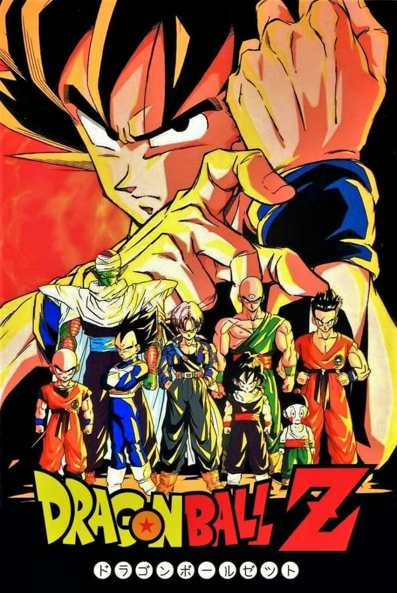

UNOFFICIAL FAN STORY · CHAPTER 01
Dragon Ball Z
A group of friends trains for a tournament while a mysterious signal approaches Earth, reminding them that power matters most when guided by responsibility.
Chapter One: A New Beginning
The training field shook as a blue streak crossed the sky. It was not a meteor but a message capsule, its screen showing a countdown and a distant star map.
Goku and his friends gathered around it. The signal warned of a satellite drifting toward a crowded coastal city. They could not simply blast it apart; fragments would rain down across the shoreline.
Working together, they redirected the satellite into a safe orbit while the others helped evacuate the harbor. The task required patience more than strength, and every precise movement mattered.
When the countdown ended, the capsule displayed a single word: THANK YOU. The team returned to training with a new goal—not to become the strongest, but to become dependable when the world needed them.
This is an unofficial, original fan-made story and is not affiliated with the official creators or publishers.